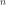

Questions¶
- The partition function is just the sum of Boltzmann factors for unique energy levels.
True and the sum can become an integral for a continuous energy spectrum
True and nobody really cares about the fact we can have energy level degeneracy
False: we must take the degeneracy into account
None of the other answers is correct
- Suppose you know the partition function of an individual, classical, object. You now place of those objects together in a box. What claim is correct?
The partition function of the collective system is always
The partition function of the collective system is provided the particles do not interact
The partition function of the collective system is only if the particles do not interact and are distinguishable
None of the other answers is correct
- Imagine the problem of Joule expansion with gas of type 1 on the left and gas of type 2 on the right initially.
The entropy of the system does not change when you allow the two gases to mix, so long as the two types of gas molecules are identical
The entropy of the system does not change when you allow the two gas to mix, regardless of their composition.
The entropy of the system does not change when you allow the two gases to mix, so long as the two types of gas molecules are different.
The entropy always increases in this process, regardless of the composition of the gas on each side of the apparatus.
This process is always reversible.
- Consider the heat capacity of a diatomic gas, treated as an ideal gas.
The heat capacity of this system tends to a non-zero value at , in agreement with the third law of thermodynamics.
The description of the system is accurate if we include translational, rotational, and vibrational degrees of freedom.
The behavior violates the third law of thermodynamics. This is due to the fact we consider that the molecules do not interact.
None of the other answers is correct.
- You are asked to calculate the partition function of a gas of hydrogen atoms. You know it is a difficult task and you decide to ask classmates to work out collectively a viable solution. Among the claims below, which one is correct?
The problem is as long as QP2 professor’s beard and there is little hope to finish it on time.
This is not a good idea as the partition function depends on many different properties, including individual energy levels and it is difficult to share this work among students.
This is a good idea: you can take advantage of the fact that each mode of a partition function contributes an individual partition function that is just a factor used to build the entire partition function. Of course, you know you can’t really build the full partition function but the more factors you include, the closer you get to the right answer.
This is a good idea: you can take advantage of the fact that each mode of a partition function contributes an individual partition function that is just a factor used to build the entire partition function. This way you only need two factors to build the exact partition function: one for the fact this is a gas and one for the fact you know how individual hydrogen atoms’ energy levels vary with the principal quantum number .
None of the other answers is correct.
- The chemical potential of a particle can be defined as (a) the energy associated with the existence (or presence) of that particle, (b) the change in internal energy with respect to a change in the number of particles (at constant entropy and volume), (c) the amount of energy added to a system when an additional particle of a given type is added to it, or (d) the Lagrange multiplier that ensures that the total number of particles remains constant when treating a system in a microcanonical framework.
only (a) and (b) are correct.
only (a), (c), and (d) are correct.
only (b) and (c) are correct.
all four definitions are correct.
- According to the second law of thermodynamics, two systems maintained at the same temperature but with particles of chemical potential and particles of chemical potential will evolve, after contact, such that
Nothing happens, they are in thermal equilibrium.
Particles will move from one system to the other so as to obtain a uniform chemical potential on both sides.
Particles will move from one system to the other so as to have the same number of particles on both sides, even if the two chemical potentials are different.
None of the other answers is correct.
- When dealing with a system where the number of particles changes, the Gibbs free energy is
A very funny function indeed.
Proportional to the number of particles.
Proportional to temperature.
- Jacobus van ‘t Hoff…
wrote an equation that provides a link between the reaction rate and its enthalpy
is a distant cousin of Stephen van Rensselaer and his equation states that more than 2 particles occupying a given container at (hopefully!) different times are more likely to cause a pandemic than 30 particles seated in a medium size container at the same time.
is a distant cousin of van der Waals but he worked on the hard-sphere potential rather than weak bonding.
None of the other answers is correct.
- The concept of entropic force originates from
the gradient of the entropic potential.
the second law of thermodynamics and the maximalization of entropy.
the need to give fancy names to elementary problems we learned in kindergarten.
None of the other answers is correct.
- A good emitter is a good absorber. This assertion is:
Always true, at a given frequency.
Typically not true.
Always true, regardless of the frequency of radiation.
There is not enough information to provide a conclusive answer.
- Thinking about the black-body radiation as described by Wien’s law, if the temperature of the black-body is doubled, what is the change in wavelength of maximal emission?
It remains the same
It is cut in half
It doubles
It quadruples
It is multiplied by 16
- When studying the radiative properties of the black-body using Rayleigh-Jeans theory, the ultra-violet catastrophe is due to…
the fact measurements at high energy were not readily available in the early days of the twentieth century. The problem was resolved after physics students were asked to complete Exp. Phys. as a graduation requirement.
the fact high energy excitations are less likely than lower energy ones (as they require more energy). This is a quantum mechanical effect that was missing in the early model.
None of the other claims is correct.
- The Debye and Einstein models provide a description of the heat capacity of a collection of harmonic oscillators. What best describes those models?
Debye’s model is superior to Einstein’s at low temperature as it provides an accurate description of the speed of sound in the material.
Einstein’s model is always superior to Debye’s at high temperature.
Debye’s model is built on the use of an average frequency to describe the system of phonons.
Einstein’s model allows for an evaluation of the maximal frequency of the collection of phonons.
- In the Einstein model for the harmonic vibrations in a crystal, we define the Einstein temperature as:
The temperature at which the effects of special relativity start to influence the vibrational frequencies.
The temperature at which the crystal freezes.
The temperature where the Brownian motion of the atomic species is most pronounced.
The average temperature of the phonons, treated so that the phonon density of states is approximated by a Dirac delta distribution.
- A gas is composed of particles with velocity close to the speed of light. Among the following assertions, which one is true?
Because it is universal, the equipartition theorem applies to this system.
The pressure of this gas is smaller than that of a non-relativistic gas with identical energy density.
There is not enough information to provide a conclusive answer.
- When would you say a gas can be described accurately by the ideal gas law?
At low density.
At high density.
At low pressure.
- The van der Waals model for a gas:
includes both an attractive and a repulsive term.
only accounts for the finite size of the particles in the gas.
only accounts for the (large distance) attractive potential between the particles.
only obeys social distancing but does not allow for attraction.
- When using a realistic description of a gas, we find that:
two coexisting phases are possible under the critical point, they correspond to two phases that have the same pressure, same volume, and same Gibbs energy
two coexisting phases are possible under the critical point, they correspond to two phases that have the same pressure, different volumes, and same Gibbs energy
two coexisting phases are possible under the critical point, they correspond to two phases that have the same pressure, different volumes, and different Gibbs energy
two coexisting phases are possible under the critical point, they correspond to two phases that have different pressure, same volumes, and different Gibbs energy
- Speaking about the virial theorem, in thermodynamics:
you can avoid it by wearing a mask
it is a theory that uses Taylor series expansion of the exact equation of states for a gas with as the variable used in the development
it is a theory that uses Taylor series expansion of the exact equation of states for a gas with
 as the variable used in the development
as the variable used in the developmentit is a theory that uses Taylor series expansion of the exact equation of states for a gas with as the variable used in the development
it is a theory that uses Taylor series expansion of the exact equation of states for a gas with as the variable used in the development
- What can be said of the concept of partition functions?
The partition function includes all possible thermodynamical information about a given system and the knowledge of occupied states is sufficient to build it.
The partition function includes most of the possible thermodynamical information about a physical system. However, it is not compatible with the third law of thermodynamics.
The partition function includes all possible thermodynamical information about a given system, the issue is that, to build it, one needs to know all the energy states of the system.
None of the other claims is correct.
- Thinking about the statistical mechanics of an ideal gas…
An ideal gas is a purely classical system where no quantum mechanical property is accounted for.
An ideal gas is a purely classical system where no relativistic effect can be accounted for.
An ideal gas can be described within a quantum mechanical framework; for instance by imposing each individual state to occupy a specific volume in wave-vector space.
An ideal gas is a gas where the interactions are weak and can be described by Hooke’s law. This, in turn, can be described by the quantum mechanical properties of harmonic oscillators.
None of the other claims is correct.
- The concept of density of states…
is useful in the sense that it allows to replace a sum over discrete states by an integral. So long as the density of state’s integral yields the right number of states (regardless of their occupation), this is an exact approach.
is useful in the sense that it allows to replace a sum over discrete states by an integral. So long as the integral of the density of states over occupied states yields the right number of occupied states, this is an exact approach.
is useful in the sense that it allows to replace a sum over discrete states by an integral. However, it remains an approximation that is only valid for fermions.
Is useful as it provides an estimate of the occupation of a given state.
None of the other claims is correct
- You are asked to build the partition function of a classical gas. You are allowed to treat it as ideal. What claim below is correct?
This is a classical system where I should not have to worry about the (possible) indistinguishability of particles
If the particles are indistinguishable, the partition function of the combined system of gas molecules must be corrected for possible multiple counting of some configurations.
If the particles are indistinguishable, the partition function of the combined system of gas molecules is best described by the Fermi-Dirac distribution.
None of the other claims is correct.
- When building the partition function of a collection of ideal gas molecules that are indistinguishable…
The partition function is simply the product of the partition functions of individual molecules since they do not interact.
The partition function is simply the sum of the partition functions of individual molecules since they do not interact.
The partition function is simply the product of the partition functions of individual molecules, divided by to get the exact partition function of the gas.
The partition function is simply the product of the partition functions of individual molecules, divided by to get an approximate partition function of the gas.
- You are asked to calculate the partition function of an ideal gas and then obtain its internal energy.
You cannot do this since there is no way to know the partition function.
An ideal gas is, by definition, a low-density ensemble of gas molecules, therefore using the normalization is accurate when evaluating the partition function. Incidentally, doing this, you find that the internal energy matches the result of the equipartition theorem.
An ideal gas is, by definition, a low-density ensemble of gas molecules, therefore the normalization using is accurate. Incidentally, doing this, you do not find the result of the equipartition theorem since the particles are indistinguishable.
None of the other claims is correct.
- In the Joule expansion experiment where an ideal gas is placed on the left container and vacuum is placed on the right:
The internal energy does not change since the work done by the gas as it expands is exactly compensated by heat transferred into the system.
The entropy of the system does not change since no heat is involved in the process.
The entropy increases since you lose information on the location of each molecule of gas.
There is not enough information to answer this question.
- It is important to remember that an ideal gas is a system where there is no interaction between the molecules in the gas. However, this does not preclude the inclusion of internal degrees of freedom some as internal vibrations, translation, rotation, etc.
This is true and this is why a gas of diatomic molecules cannot undergo a phase transition at room temperature.
This is not entirely true as a gas is, by definition, always non-interacting.
This is true and this is how you can understand how the heat capacity changes with temperature with the various degrees of freedom being “turned on” as enough thermal energy is available at each step.
None of the other claims is correct.
- The grand partition function is best suited when working in the grand canonical ensemble. Among the assertions below, which one is true?
Grand canonical ensembles allow for changes (transfers) of heat and work, but not of entropy.
Grand canonical ensembles allow exchange of heat and number of particles, thus fixing the total enthalpy of the systems.
Grand canonical ensembles allow exchange of energy and number of particles, thus fixing the temperature and chemical potential
Grand canonical ensembles are canonical ensembles that apply to very large systems, thus imposing the number of particles.
- The existence of osmosis and the fact rubber cools when elongated are manifestations of…
The fact physics never ceases to amaze me.
Entropy can have macroscopic effects, including the emergence of forces that sometimes behave counterintuitively.
The third law of thermodynamics, as the absolute zero of temperate cannot be met
Two separate effects, both related to thermodynamics, but with nothing else in common
- In the context of thermodynamics, Kirchhoff’s law establishes that
A good emitter is a good emitter at any wavelength
A good emitter is a good absorber at any wavelength
A good emitter is a good absorber at a given wavelength
The black-body radiator is a perfect transmitter
- The detailed properties of the cosmic microwave background as measured on Earth establish that
The Universe has cooled down significantly from the early moments of existence of the universe, which could have happened at multiple places at once
The Universe has cooled down significantly since the early moments of the Universe, which was likely concentrated in a small volume.
The Universe is ruled by the rules of physics of which physicists have the keys.
The left-over radiation from the big bang are microwave radiations, with wavelengths in the micro-meter regime
- The heat capacity due to phonons:
Is a constant (with respect to temperature), and follows Dulong-Petit empirical law
Varies linearly with respect to temperature
Varies as for large enough temperatures
Varies as at low temperature
- Speaking about optical phonons in a one-dimension chain of atoms periodically Arranged…
There is no optical phonons in 1D systems.
There are both optical phonons and acoustic phonons in any 1D system.
Optical phonons can be found in a 1D chain of atoms so long as the chain is made up of at least two different types of atoms.
Acoustic phonons can be excited by an external source of light.
- How can we come to the conclusion that the early Universe was radiation dominated?
The observation of a cosmic microwave background established the presence of radiation in the early Universe
The entropy of an isolated system can only increase
Because the particle density of ultra-relativistic particles decreases faster than that of non-relativistic particles. This is a consequence of the difference in dispersion relations.
Because radiation is made up of bosons
- If we agree that the Universe expands: this expansion is:
adiabatic, with an adiabatic index being universal for all components of the early universe
isothermal, with an overall conservation of mass
adiabatic, with an adiabatic index being dependent on the type of particles considered
isobaric, as there is no work done by the universe against vacuum
- The Dieterici equation is:
A type of equation of state that reduces to the ideal gas law at high density of matter.
An equation that describes gas, including their interactions (repulsion only).
An equation that describes interacting gas (both attraction and repulsion) but it is usual inferior to (i.e., not as accurate as) van der Waals equation.
An equation that describes interacting gas, it provides a realistic fast decay of the inter-molecular interactions in the gas.
An equation of state that provides a very accurate description of an interacting gas but fails to provide a description of phase transitions.
- The law of corresponding states provides a universal approach to describe gases. Among the statements below, which ones are correct?
the specific volumes of different gases at same pressure and temperature are the same
the reduced volumes of different gases at same reduced pressure and reduced temperature are the same
none of the other answers is correct.
- The Boyle temperature:
Is a temperature at which a realistic description of gas obeys Boyle’s law.
Is a temperature at which the density of a gas a is 1/100 of that of the corresponding liquid.
Is also known as the Boyling temperature: the temperate at which the brains of Arch students start to liquify.
Is related to virial theorem as the temperature at which van der Waals gas reach sublimation under standard thermodynamic conditions.
- Imagine that a real gas is used in a Joule expansion experiment (that is when a gas expands against vacuum in a thermally isolated system):
The internal energy decreases, thus cooling.
The internal energy increases, leading to a decrease in kinetic energy, thus Cooling.
The internal energy is constant and the interaction between the gas molecules increases, thus heating.
The internal energy is constant and the attractive interaction between the gas molecules increases, thus cooling.
The internal energy is constant and the attractive interaction between the gas molecules decreases, leading to an increase in energy and a corresponding decrease in kinetic energy, thus cooling.
The internal energy is constant and the interaction between the gas molecules decreases, leading to a decrease in energy and a corresponding increase decrease in kinetic energy, thus heating.
- An ideal gas is used for a Joule expansion experiment:
The internal energy is constant, and the gas cools down
The internal energy is constant, and the gas heats up
The internal energy goes down, and the gas cools down
The internal energy goes down, and the gas heats up
The internal energy is constant, and the gas remains at the same temperature
- A realistic gas (e.g., one that follows van der Waals equation of state) is used in a Joule expansion experiment:
The internal energy is constant, and the gas cools down
The internal energy is constant, and the gas heats up
The internal energy goes down, and the gas cools down
The internal energy goes down, and the gas heats up
The internal energy is constant, and the gas remains at the same temperature
- Imagine expanding a vdW gas isothermally.
Its entropy goes up by a value that depends only on the attracting potential between the molecules of gas.
Its entropy goes up by a value that depends only on the repulsive potential between the molecules of gas.
Its entropy goes down by a value that depends only on the attracting potential between the molecules of gas.
Its entropy goes down by a value that depends only on the repulsive potential between the molecules of gas.
The entropy is a constant since the process is performed isothermally.
None of the other claims is correct.
- During an isothermal expansion of a gas, the internal energy:
The internal energy of the gas always increases, even for an ideal gas.
The internal energy of the gas always decreases, even for an ideal gas.
The internal energy of the gas always remains constant, even for an ideal gas.
The internal energy always increases for a real gas.
The internal energy always decreases for a real gas.
The internal energy always remains the same for a real gas.
- Consider the Joule-Kelvin expansion of a real gas.
It is always possible to find a pressure so that the gas cools down, regardless of the starting temperature.
It is not always possible to find a pressure so that the gas cools down, regardless of the starting temperature.
There isn’t enough information to answer this question conclusively.
- The Joule-Kelvin expansion is a process that takes place…
at constant temperature
at constant Gibbs energy
at constant enthalpy
at constant entropy
at constant Helmholtz free energy
- A first-order phase transition is defined as
a phase transition with a discontinuous change in entropy and heat capacity.
a phase transition with a discontinuous change in volume and heat capacity.
a phase transition with a discontinuous change in volume and entropy.
a phase transition that occurs before anything else can happen.
none of the other claims is correct.
- Using, for example, the equation of state described by van der Waals,
a phase transition always occurs with an abrupt change from a gas to a liquid (and vice versa).
a phase transition sometimes occurs with an abrupt change from a gas to a liquid (and vice versa).
a phase transition cannot be described with such a simple model.
none of the other claims is correct.
- Right at the phase transition between a liquid and a solid,
the chemical potential of the liquid is always larger than that of the solid
the chemical potential is not well defined during the transition
the chemical potential is the same during the transition
none of the other claims is correct
- The Clausius-Clapeyron equation
describes how the chemical potential changes during a phase transition.
describes the domain, in the phase space, of equilibrium between two difference phases, e.g. a liquid and a gas.
describes the amount of energy (e.g., latent heat) needed for the phase transition to take place.
describes how the ideal gas law can explain some phase transitions.
- During a phase transition between ice and liquid water, we know that
the chemical potential of the liquid is always larger than that of ice.
the density of the solid decreases compared to that of the liquid.
there is a critical temperature over which the two phases do not transition into one another abruptly.
none of the other claims is correct.
- To really understand a phase transition, we have to remember that
only thermodynamics matters and the system will always lead to the phase with lowest chemical potential.
only thermodynamics matters and the system will always lead to the phase with lowest chemical potential.
thermodynamics only applies at the thermodynamic limit and it may happen that metastable states are observed during the transition.
all phase transitions are first-order transitions since additional heat is needed to vaporize a liquid.
none of the other claims is correct.
- The existence of superheated liquids…
violates principles of thermodynamics
corresponds to a metastable state of matter
cannot be used to observe radio-active decay
is a concept invented by the professor to make our life miserable
none of the other claims is correct
- A Bose Einstein condensate has been demonstrated for laser-cooled alkali atoms. It is just a matter of time, and will probably lead to a Nobel Prize, before cryogenic technology can reach a temperature low enough to demonstrate a Fermi Dirac condensate.
True, and the most likely systems to reach such a phase are positrons
In fact, this has already been demonstrated in experiments performed in quantum cavities
False, because of the symmetry of the wave functions of Fermions, such a condensate is not possible.
There are some indications that this phase of matter may have been present at the early universe.
- When we consider thermal fluctuations over time, we can say
a crystal is more symmetric than a liquid
a liquid is more symmetric than a solid
symmetry has nothing to do with phase transitions
none of the other claims is valid
- The Ising model
is a model that allows the description of phase transitions in magnetic materials in one, two, and three dimensions
is a model that allows the description of phase transitions in magnetic materials in two and three dimensions
is a model that can be used to understand ferromagnetism order but is unable to explain antiferromagnetism
- When we treat a collection of indistinguishable particles quantum-mechanically
we have to make sure we do not allow particles to occupy the same state
we have to make sure the number of available states is large enough so that we allow for excitations to occur
we have to make sure the wave function describing a collection of particles is an eigenstate of the exchange operator
we do not have to worry about indistinguishability since the state occupation follows Boltzmann distribution for all practical purposes
- Quantum mechanically (in three dimensions), there are only two types of particles:
particles and their antiparticles
bosons, for which the wave function is symmetrical with respect to the exchange operator and fermions, for which the wave function can assume any symmetry so long as it is different from that of bosons
bosons and fermions, particles that are antisymmetric and symmetric (respectively) with respect to the exchange operator
bosons and fermions, particles that are symmetric and antisymmetric (respectively) with respect to the exchange operator
- When dealing with a boson, we have to choose the chemical potential:
so that the corresponding wave functions are anti symmetric upon the application of the exchange operator
so that the total number of particles is conserved
so that it is always strictly smaller than the energy of the ground state
so that it is always smaller or equal to the energy of the ground state
- The Boltzmann distribution is an accurate description of a quantum system under what conditions?
It is never a good approximation since it treats particles as distinguishable
It is a good approximation of very high density of particles
It is a good approximation at very low density of particles
It is a good approximation whenever the entropy of the system is larger than that of a melting ice cube
- We must use the Fermi-Dirac distribution when
The particles’ wave function is symmetric upon the application of the exchange operator
The particles’ wave function is antisymmetric upon the application of the exchange operator
The particles behave quantum mechanically, especially at high-temperature
The Thermo and the IQM teachers agree with each other
Never, the Fermi-Dirac distribution only applies to systems that can be represented formally by a ket vector
- The fugacity is
used when you want to describe particles that tend to move due to a high local density
a positive number that only depends on temperature
a positive number that only depends on the chemical potential
a short-hand notation for the Boltzmann factor
none of the other answers is correct
- The density of states is used to describe the number of particles with a given property, e.g., energy.
True, and it is used to replace a sum over states. This is always true.
True, and it is used to represent the probability distribution. This is a usually good approximation.
True, and it is used to replace a sum over states. This is usually a good approximation.
True, and it is used to represent the probability distribution. This is always true.
False, the density of states only depends on the system’s volume
- The Fermi Energy
is always equal to the chemical potential
is almost always equal to the chemical potential
is a way to describe the energy of the lowest energy level (i.e., the ground state)
is the highest energy that a boson can occupy at a given temperature
- The properties of a metal are mostly dependent on
The states farthest away from the Fermi energy
The states close to the Fermi energy (in a window of about )
None of the other claims is valid
- The heat capacity of a metal is due to
phonons only
electrons and phonons, with the latter usually dominating at low temperature
electrons and phonons, with the former usually dominating at low temperature
electrons only
electrons, phonons, and entropy
- A Bose-Einstein condensate:
forms when the temperature is large and the density is low
forms when the temperature is large and the density is large
has never been observed, though it would be really cool if one could
can be formed with paired fermions so long as the pairs have integer spin values
forms the same way as a phase transition: it is due to increased interactions between bosons
- Imagine you have a very large number of available states that can be populated at a given temperature. Imagine also that the density of particles is low. Among the assertions below, which one is not true (please read the question carefully – Choice: each word counts) ?
The system has a small chemical potential, compared to the typical energy involved here
The system can be described by Boltzmann distribution in pretty good approximation.
Since the density of particles is small and the number of states is large, it is unlikely that a given state is doubly occupied and we do not have to worry about state indistinguishability or symmetry of the wave functions too much.
All the other assertions are true.
- In the screencast we derived an expression for the Fermi-Dirac distribution using the grand canonical ensemble. What is the grand canonical ensemble?
The ensemble of systems with fixed energy and entropy.
The ensemble of systems with fixed energy and chemical potential.
The ensemble of systems with fixed temperature and chemical potential.
- Is it possible to derive an expression of the Fermi-Dirac distribution using the microcanonical ensemble (fixed temperature and number of particles)?
Yes, we calculate the number of microstates and maximimze the entropy under constraints using Lagrange multipliers.
Yes, we sum all the Boltzmann factors and integrate over the energy.
No, Fermi-Dirac applies to fermions, which require the chemical potential to be constant.
No, otherwise we would have done it in the screencast or during the weekly problem solving session.
- The Fermi energy (select the most accurate answer)…
coincides with the chemical potential at zero temperature
marks the highest occupied energy state of a Fermionic system at a given temperature
the other two answers are correct
- This fall, I enjoyed Thermodynamics and Statistical Mechanics…
A lot
Very much
Of course
Certainly is definitely not the same as
Attention
Certainly is definitely not the same as